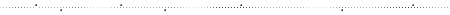

*ご挨拶 *リンク集 *サイトマップ・作品案内 朗読配信：日曜夜きまぐれ配信 →過去の朗読作品 Click&CLAP! Blog Twitter 落書き帳 MailForm 一言掲示板 ←トップへ戻る |
…――詩集のまねごと、感情の切れ端  雨原に眠る （蒸留済み） 寓話幻想 （重力解放） パステル・パステル （たどたどしく） 旅人よ立ち止まれ （旅行記詩） Last UP→8.6 雨原・寓話・パステル 詩の傾向ごとにそれぞれ分類してあります。新タブでの閲覧がお勧めです。 (感情の切れ端 2007~12) 51-60 / 61-70 / 71-80 / 81-90 / 91- 1-10 / 11-20 / 21-30 / 31-40 / 41-50 さなぎ （中学高校詩集） 文藝部掲載作品 （06〜08年） Trash |